기계설계산업기사 (2004-09-05 기출문제)
1과목: 기계가공법 및 안전관리
1. 그림과 같이 균일 분포하중 ω=1000 N/m가 작용하는 외팔보에서 최대 굽힘모멘트는 몇 N∙m 인가？
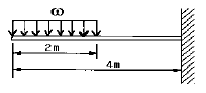
- 3000
- 4000
- 6000
- 8000
(정답률: 30%)

2. bxh=5 cmx10 cm이고 길이가 2 m인 직사각형 단면의 양단 고정 기둥이 있다. 오일러 공식을 적용하여 나무기둥에 가할 수 있는 좌굴하중은 몇 kN인가? (단, 탄성계수 E= 100 GPa이다.)
- 64.3
- 257.0
- 514.0
- 1028.1
(정답률: 18%)
3. 그림과 같이 길이 1 m인 외팔보가 100 N/cm의 균일분포 하중을 받고 있을 때 자유단의 처짐을 0이 되게 하기 위해서는 집중하중 P의 값을 몇 N으로 하면 되는가?
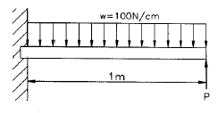
- 1560
- 2550
- 3280
- 3750
(정답률: 16%)
4. 직경 15mm, 길이 2m의 환봉이 20 kN의 축인장 하중을 받고 2mm 늘어났다고 한다. 환봉에 발생하는 탄성계수 값는 몇 GPa 인가?
- 226
- 22.6
- 113
- 11.3
(정답률: 20%)
5. 그림과 같은 단순보에서 길이 ℓ, 직경 d, 중앙에 집중하중 P가 작용할 때 최대 전단응력은?
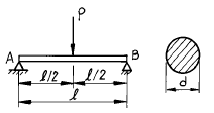
- 4P/3πd2
- 8P/3πd2
- 16P/3πd2
- 32P/3πd2
(정답률: 44%)
6. 그림과 같은 외팔보에 집중하중 P = 2 kN이 각각 작용하고 있을 때 고정단의 최대굽힘 모멘트는 몇 kN∙m 인가?
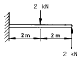
- 10
- 8
- 6
- 4
(정답률: 33%)
7. 다음 외팔보의 굽힘모멘트 선도를 보고 최대 처짐각 θ 를 구하면 몇 rad 인가? (단, 재료의 강성계수는 EI=44.8 kN·m2이다.)
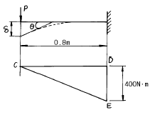
- 3.57x10-3
- 4.67x10-3
- 5.54x10-3
- 6.47x10-3
(정답률: 16%)
8. 그림과 같은 보의 단면계수(Zx)는 몇 cm3 인가?
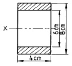
- 24.6
- 28.6
- 32.6
- 36.6
(정답률: 20%)
9. 원형단면축에 있어서 다른 조건은 동일하게 하고 직경을 3배로 하면 비틀림각은 몇 배가 되는가?
- 1/9
- 1/27
- 1/54
- 1/81
(정답률: 12%)
10. 그림과 같이 길이 120 cm, 단면적 4 cm2인 균일 단면봉이 P=15 kN, Q=7.5 kN을 받고 있다. 이때 봉의 변형량은 몇 cm 인가? (단, 탄성계수 E = 200 GPa이다.)
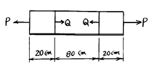
- 0.2
- 0.1
- 0.⑤
- 0.015
(정답률: 24%)
11. 다음 중에서 기둥의 세장비를 옳게 정의한 것은?
- 좌굴하중을 단면적으로 나눈 값
- 좌굴하중을 단말조건 계수 n으로 나눈 값
- 기둥의 길이를 단면 2차 모멘트로 나눈 값
- 기둥의 길이를 단면의 2차 반지름으로 나눈 값
(정답률: 12%)
12. 원형 단면봉에 40 kN의 인장하중이 작용한다. 봉의 인장 강도가 420 MPa이고 안전율을 5라 할 때, 이 봉의 지름은 최소 몇 cm로 설계해야 하는가?
- 2.01
- 2.47
- 3.01
- 3.56
(정답률: 23%)
13. 지름 2 cm, 길이 1.5 m의 둥근막대의 한끝을 고정시키고 그 자유단을 10° 비틀었다면 이 막대에 생긴 최대 전단 응력은 몇 MPa 인가? (단, 전단 탄성계수 G = 84 GPa이다.)
- 38.4
- 48.8
- 87.8
- 97.7
(정답률: 18%)
14. 다음 그림과 같은 외팔보에서 나타날 수 있는 굽힘모멘트 선도는?
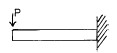
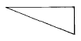
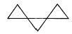
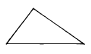
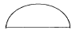
(정답률: 48%)
15. 평면응력 상태에서 수직응력 σx= -5 MPa, σy= 15 MPa, 전단응력 τxy=10 MPa 일 때 최대 및 최소 주응력 σ1과 σ2는 몇 MPa 인가?
- σ1 = 18.74, σ2 = -5.14
- σ1 = 19.14, σ2 = -9.14
- σ1 = 20, σ2 = -4
- σ1 = 12, σ2 = -3
(정답률: 44%)
16. 길이가 2m인 단순보의 중앙에 집중하중을 작용시켜 최대 처짐이 0.2cm로 제한하려면 하중은 몇 N이하여야 하는가? (단, 지름 d=10cm의 원형단면이고, E = 200 GPa 이다.)
- 9460
- 11780
- 14870
- 18830
(정답률: 47%)
17. 다음과 같은 분포 하중을 받는 단순보의 최대 굽힘모멘트는?
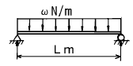
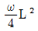
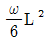
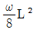
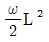
(정답률: 48%)
18. 단면의 주축에 관한 설명으로 옳은 것은?
- 주축에서는 단면상승 모멘트가 0이다.
- 주축에서는 단면상승 모멘트가 최대이다.
- 주축에서는 단면상승 모멘트가 최소이다.
- 주축에서는 단면 2차 모멘트가 0이다.
(정답률: 33%)
19. 그림과 같은 외팔보의 자유단에 모멘트 M = Ph가 작용할 때 생기는 최대 처짐량은 얼마인가? (단, E는 탄성계수, I는 단면 2차 모멘트이다.)
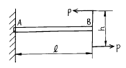
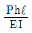
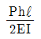
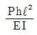
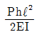
(정답률: 13%)
20. 단면적이 10cm2인 봉을 35℃에서 수직으로 매달고 -10℃로 냉각하였을때 원래의 길이를 유지하려면 봉의 하단에 몇 kN 추를 달면 되는가? (단, 봉의 자중은 무시하고 선팽창계수 α= 12x10-6/℃, 탄성계수 E = 200 GPa 이다.)
- 72
- 82
- 98
- 108
(정답률: 18%)
2과목: 기계제도
21. 표면경화와 피로강도 상승의 효과가 함께 있는 가공법은?
- 숏피닝
- 래핑
- 샌드블라스팅
- 호빙
(정답률: 58%)
22. 방전가공(electric discharge machining)에 관한 설명 중 틀린 것은?
- 절삭가공이 어려운 높은경도의 재료도 비교적 쉽게 가공할 수 있다.
- 열의 영향을 받으므로 가공변질층이 넓은 단점이 있다.
- 내마모성이 높은 표면을 얻을 수 있다.
- 내부식성이 높은 표면을 얻을 수 있다.
(정답률: 47%)
23. 브라운 샤프형 분할판을 사용하여 원주를 35등분하려고 할 때, 적당한 구멍열은?
- 19
- 20
- 21
- 27
(정답률: 47%)
24. 초음파 용접에 관한 설명 중 틀린 것은?
- 접촉면 사이의 원자간의 인력(引力)이 작용하여 용접이 된다.
- 용접가능한 판두께가 매우 얇다.
- 가압력이 필요없다.
- 서로 다른 금속간의 용접에 극히 유용하다.
(정답률: 26%)
25. 1/20㎜의 버니어 캘리퍼스를 설명한 것 중 맞는 것은?
- 본척의 눈금이 0.5㎜, 부척의 눈금은 19㎜를 20등분 한 것.
- 본척의 눈금이 1㎜, 부척의 눈금은 19㎜를 20등분 한 것.
- 본척의 눈금이 0.5㎜, 부척의 눈금은 19㎜를 25등분 한 것.
- 본척의 눈금이 1㎜, 부척의 눈금은 19㎜를 25등분 한 것.
(정답률: 44%)
26. 플레이너(Planer)의 급속귀환 운동에 부적당한 기구는?
- 유압 기구
- 크랭크 장치
- 랙과 피니언
- 웜과 웜기어
(정답률: 21%)
27. 드릴에서 디닝(thinning)을 옳게 설명한 것은?
- 드릴의 장시간 사용으로 웨브가 얇아지는 것이다.
- 마진의 폭을 좁히는 것이다.
- 백 테이퍼를 증가시키는 것이다.
- 절삭저항을 감소시키기 위하여 웨브(web)두께를 얇게 연삭하는 것이다.
(정답률: 52%)
28. 맨네스맨(Mannesmann)식 제관법(製管法)에 해당되는 것은?
- 단접관법
- 용접관법
- 천공법(piercing process)
- 오무리기법(cupping process)
(정답률: 42%)
29. 펀치나 다이에 시어각(Shear angle)을 주는 까닭은 무엇인가?
- 펀치나 다이를 보호하기 위해서
- 전단면을 아름답게 하기 위하여
- 전단하중을 줄이기 위하여
- 다이에 대해 펀치의 편심을 방지하기 위해
(정답률: 25%)
30. 목형의 종류중 대형이고 제작 수량이 적은 주물에서 재료와 공사비를 절약하기 위해 골격만 목재로 만드는 것은?
- 코어 목형(core pattern)
- 부분 목형(section pattern)
- 긁기 목형(strickle pattern)
- 골격 목형(skeleton pattern)
(정답률: 63%)
31. 소성가공에는 상온가공과 고온가공이 있다. 고온가공을 제일 적합하게 설명한 것은?
- 고온에서 가공하는 방법
- 재결정 온도 이상에서 가공하는 것
- 가열하면서 가공하는 것
- 변태점 이하의 낮은 온도에서 가공하는 방법
(정답률: 64%)
32. 목형의 종류중 현형의 종류가 아닌 것은?
- 단체 목형
- 분할 목형
- 부분 목형
- 조립 목형
(정답률: 18%)
33. 방전 가공기의 형식이 아닌 것은?
- 콘덴서형
- 실리콘형
- 크리스탈형
- 다이오드형
(정답률: 45%)
34. 소성가공이 아닌 것은?
- 인발(drawing)
- 단조(forging)
- 나사전조(thread rolling)
- 브로칭(broaching)
(정답률: 66%)
35. 강의 표면 경화법에서 시안화법(cyaniding)은?
- 화염경화법(火炎硬化法)
- 고주파 경화법(高周波硬化法)
- 질화법(窒化法)
- 청화법(靑化法)
(정답률: 23%)
36. 내경 측정에 사용되는 측정기가 아닌 것은?
- 내측 마이크로미터
- 실린더 게이지
- 버니어 캘리퍼스
- 옵티컬 플랫
(정답률: 60%)
37. 드릴지그의 분류에서 상자형 지그(box jig)에 포함되지 않는 것은?
- 개방형(Open type)
- 밀폐형(Closed type)
- 평판형(Plate type)
- 조립형(Built up type)
(정답률: 43%)
38. 직류 아크 용접시 모재를 양극(+), 용접봉을 음극(-)으로한 전원의 극성은?
- 정극성
- 역극성
- 혼합극성
- 수하특성
(정답률: 47%)
39. 워엄기어(worm gear)의 가공방법이 아닌 것은?
- 호브(hob)를 반경방향으로 이송하는 방법
- 테이퍼호브(taper hob)를 접선(接線)이송하는 방법
- 호빙머시인에서 플라이커터(fly cutter)에 의한 가공 방법
- 랙커터(rack cutter)에 의한 가공방법
(정답률: 23%)
40. 인발 작업에서 지름 5.5mm의 와이어를 Ø 4mm로 가공하려고 한다. 이때의 단면 수축율 및 가공도는 얼마인가?
- 약 47%, 약 53%
- 약 47%, 약 55%
- 약 53%, 약 47%
- 약 55%, 약 47%
(정답률: 19%)
3과목: 기계설계 및 기계재료
41. 두개의 축이 평행하고, 그 축의 중심선의 위치가 약간 어긋났을 경우, 각속도는 변화없이 회전동력을 전달시키려고 할 때 사용되는 가장 적합한 커플링은?
- 플랜지 커플링(flange coupling)
- 올덤 커플링(oldham coupling)
- 플렉시블 커플링(flexible coupling)
- 유니버설 커플링(universal coupling)
(정답률: 42%)
42. 금속의 일반적인 소성가공은 재료의 어떤 성질을 이용하는 것인가?
- 가공경화
- 재결정
- 영구변형
- 기계가공성
(정답률: 13%)
43. 충격시험은 무엇을 측정하기 위한 시험인가?
- 인장강도
- 연신율
- 경도
- 인성
(정답률: 13%)
44. 비중이 가벼워 항공기, 자동차 부품 등에 사용되는 합금은?
- Sn 합금
- Cu 합금
- Mg 합금
- Ni 합금
(정답률: 47%)
45. 길이 3m, 안지름 25㎜의 구리관에 내압 8㎏f/mm2이 작용할때 파이프의 두께 t는 몇 ㎜ 정도인가? (단, 허용 인장응력 σa = 17㎏f/mm2이고, 이음 효율 η = 85%이며, 부식여유는 무시한다.)
- t = 6.92
- t = 9.81
- t = 12.03
- t = 15.42
(정답률: 8%)
46. 지름 100㎜인 원동 마찰차의 회전수를 1/4로 감소시키는데 사용할 종동 마찰차의 지름은 얼마인가?
- 400㎜
- 300㎜
- 250㎜
- 25㎜
(정답률: 45%)
47. 담금질한 강에 인성을 부여하고 조직을 균일화 하는 열처리 방법은?
- 뜨임
- 침탄
- 풀림
- 질화
(정답률: 50%)
48. 핀이 사용 되는 곳으로 틀린 것은?
- 나사 및 너트의 풀림 방지에 사용
- 작은 핸들과 축의 고정이나 끼워 맞춤부분의 위치 결정에 사용
- 기계 부품의 연결 등 키보다 하중이 가볍게 걸리는 곳에 간단하게 체결할 때 사용
- 영구적 결합이 필요로 하는 곳에 사용
(정답률: 66%)
49. 잇수가 각각 150 과 50 이고, 치직각 모듈 m = 6인 헬리컬 기어에 있어서 중심거리는 몇 ㎜가 되는가? (단, 비틀림각 β = 30° 로 한다.)
- 593
- 693
- 793
- 893
(정답률: 39%)
50. 레디얼 볼 베어링 #6311의 안지름은 얼마인가?
- 55㎜
- 63㎜
- 11㎜
- 12㎜
(정답률: 53%)
51. 유니파이나사의 나사산 각도는?
- 55°
- 60°
- 30°
- 50°
(정답률: 41%)
52. 서로 미끄럼 접촉을 하는 한쌍의 기소(element) 중에 곡선 윤곽을 갖는 구동체를 무엇이라 하는가?
- 종동절(follower)
- 나이프 에지(knife-edge)
- 롤러(roller)
- 캠(cam)
(정답률: 35%)
53. 다음중 2축이 직각인 경우가 많고, 큰 감속비를 얻고자하는 경우에 가장 많이 쓰이는 기어는?
- 하이포이드기어
- 웜기어
- 스퍼어 기어
- 베벨기어
(정답률: 28%)
54. 다음 그림과 같은 겹치기 필렛용접이음에서 허용응력을 9㎏f/mm2 강판의 두께 t1 =10㎜, t2 = 15㎜일 때 용접부의 유효길이 L은 몇 ㎜가 적당한가? (단, 용접부 A, B부의 응력은 같고, 인장하중 P = 5000㎏f이다.)
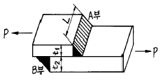
- 26.1
- 31.4
- 36.8
- 41.3
(정답률: 44%)
55. 주조시 주형에 냉금을 삽입하여 주물 표면을 급냉시키므로서 백선화 하고 경도를 증가시킨 내마모성 주철은?
- 합금 주철
- 구상 흑연 주철
- 가단 주철
- 칠드 주철
(정답률: 36%)
56. 다음 중 스테인리스강에 가장 많이 함유되는 원소는?
- 아연(Zn)
- 텅스텐(W)
- 크롬(Cr)
- 코발트(Co)
(정답률: 41%)
57. 고온에서 다른 재료에 비해 강도가 우수하기 때문에 항공기 외판 등에 사용하는 재료는?
- Ni
- Cr
- W
- Ti
(정답률: 48%)
58. 세라믹(Ceramics) 공구의 특징이 아닌 것은?
- 내부식성, 내산화성이 크다.
- 고속 및 고온절삭에 적합하다.
- 인성이 크며 충격용에 적합하다.
- 내열성이 우수하다.
(정답률: 44%)
59. 다음 재료 중 기계구조용 탄소강을 나타낸 것은?
- STS4
- STC4
- SM45C
- STD11
(정답률: 62%)
60. 다음 중 주철의 흑연을 구상화 시키기 위하여 첨가하는 원소는?
- Si
- Mg
- Cr
- Mo
(정답률: 33%)
4과목: 컴퓨터응용설계
61. 동차좌표(Homogeneous coordinate)에 의한 표현을 바르게 설명한 것은?
- N차원의 벡터를 N－1차원의 벡터로 표현한 것이다.
- N차원의 벡터를 N＋1차원의 벡터로 표현한 것이다.
- N차원의 벡터를 N(N－1)차원의 벡터로 표현한 것이다.
- N차원의 벡터를 N(N＋1)차원의 벡터로 표현한 것이다
(정답률: 11%)
62. (x + 7)2 + (y - 4)2 = 64 인 원의 중심과 반지름은?
- 중심 (-7, 4), 반지름 8
- 중심 (7, 4), 반지름 8
- 중심 (-7, 4), 반지름 64
- 중심 (-7, -4), 반지름 64
(정답률: 50%)
63. 베어링 계열기호 중 앵귤러 볼 베어링을 나타내는 것은?
- 7200A
- 6003V
- NA4822
- NN30⑤
(정답률: 23%)
64. 다음 중 CAD 시스템용 입력장치가 아닌 것은?
- 라이트 펜(light pen)
- 섬휠(thumb wheel)
- 퍽(puck)
- 데이타 글로브(data glove)
(정답률: 44%)
65. 2차원 좌표계에서 좌표를 [x,y,1]과 같이 row vector로 표시할 때
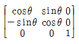
변환행렬은 어느 축으로 회전시켰을 때의 회전인가?- ｘ축
- ｙ축
- ｚ축
- ｘｚ축
(정답률: 27%)
66. 나사의 도시법에 대한 설명 중 틀린 것은?
- 수나사의 바깥지름과 암나사의 안지름은 굵은실선으로 그린다.
- 불완전 나사부와 완전 나사부의 경계선은 굵은실선으로 표시한다.
- 수나사의 골지름과 암나사의 바깥지름은 굵은실선으로 그린다.
- 암나사 탭 구멍의 드릴 자리는 120° 의 굵은실선으로 그린다.
(정답률: 42%)
67. 한 문자를 표시하는데 7개의 데이터 비트와 1개의 패리티 비트를 사용하며, 존 비트 3개와 디짓 비트 4개로 구성되어 있으며, 128개의 문자 표현을 할 수 있는 표준 코드는 무엇인가?
- BCD 코드
- EBCDIC 코드
- ASCⅡ 코드
- HAMMING 코드
(정답률: 52%)
68. 보기와 같이 숫자를 □ 속에 기입하는 이유는?
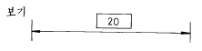
- 이론적으로 정확한 치수를 표시
- 주조의 가공을 위한 치수를 표시
- 정정이 가능하도록 임시로 치수를 표시
- 가공 여유를 주기 위하여 치수를 표시
(정답률: 70%)
69. 다음의 설명 중 맞는 것은 어느 것인가?
- 2개의 직선은 언제나 교차점을 갖는다.
- 2개의 직선에 접하는 원은 반경만 주어지면 유일하게 정해진다.
- 직선과 원의 교점은 항상 2개가 된다.
- 극좌표계로 표시하면 r= a 는 원이 된다. (단, a>0)
(정답률: 27%)
70. 코일 스프링의 모양만을 도시할 경우 재료의 중심선을 어떤 선으로 표시하는가?
- 가는 실선
- 굵은 실선
- 가는 1점쇄선
- 굵은 1점쇄선
(정답률: 24%)
71. 다음에서 주어진 정면도와 평면도에 맞는 우측면도로 올바른 것은?
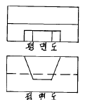
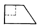
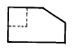
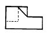

(정답률: 51%)
72. 기하 공차의 종류 중 모양 공차에 해당되지 않는 것은?
- 평행도 공차
- 진직도 공차
- 진원도 공차
- 평면도 공차
(정답률: 47%)
73. 두 개 이상의 곡면을 부드럽게 연결되게 하는 곡면 처리를 무엇이라 하는가?
- 블랜딩(blanding)
- 셰이딩(shading)
- 모델링(modeling)
- 리드로잉(redrawing)
(정답률: 56%)
74. 그림과 같이 평면상의 두 벡터
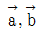
로 이루어진 평행사변형의 넓이를 구한 식으로 맞는 것은?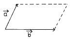
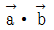
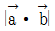
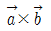
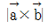
(정답률: 32%)
75. CAD 시스템 출력 장치가 아닌 것은 어느 것인가?
- 플로터(plotter)
- 프린터(printer)
- 디스플레이(display)
- 조이스틱(joystick)
(정답률: 61%)
76. 반복 도형의 피치를 잡는 기준이 되는 피치선의 선의 종류는?
- 가는 실선
- 굵은 실선
- 가는 1점 쇄선
- 굵은 1점 쇄선
(정답률: 67%)
77. 다음 그림 중 단면도의 종류가 틀린 것은?
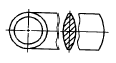
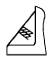
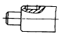
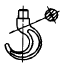
(정답률: 36%)
78. 대상물의 보이는 부분의 형상을 표시하는데 사용하는 선은?
- 가는실선
- 굵은실선
- 가는1점쇄선
- 굵은1점쇄선
(정답률: 49%)
79. CAD시스템에서 점의 작성 방법이 아닌 것은?
- 요소의 끝점을 선택하는 방법
- 교차하는 두 선을 선택하는 방법
- 교차하는 두 평면을 선택하는 방법
- 요소의 중간점을 선택하는 방법
(정답률: 61%)
80. 다음 그림에서 부분이 뜻하는 의미는 무엇인가?
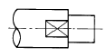
- 실린더
- 평면
- 원추
- 타원
(정답률: 71%)